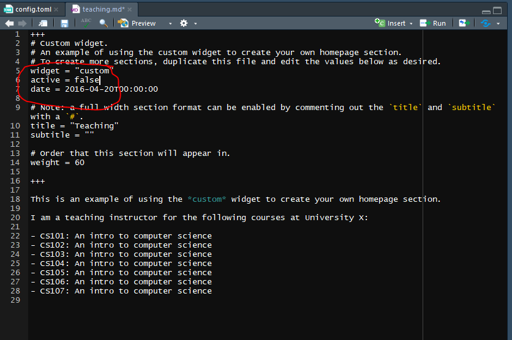
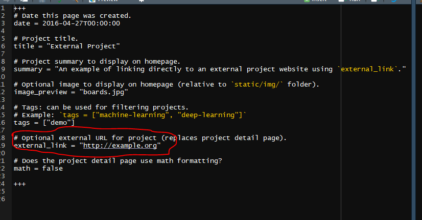
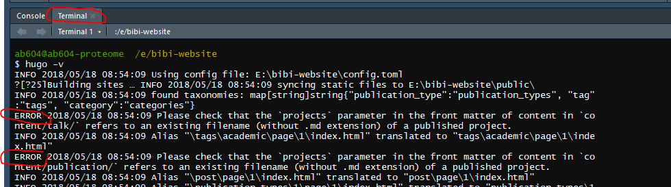
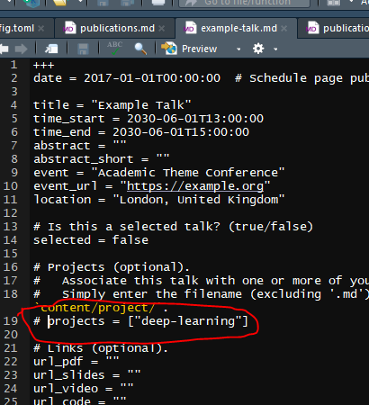

3 Adding content to the site
3.1 The file structure in R
The folder containing the published website as we saw in the last chapter is the public folder.
The config.toml file is where we set the global configurations for the site.
For detail see the TOML syntax blogdown chapter, but most of what we’re going to change is quite straightoforward, see Configuration
The content folder contains subdirectories containing the files that we create or edit for the sections on the website e.g. publications or project pages.
Images and other files we might want (such a CV) go in the static folder and sub-folders respectively. These will then be copied to the public folder when we build the site.
We don’t need to touch the other folders for the purposes of this tutorial, but as before the blogdown book has all the details.
3.2 Configuration
Here we’ll configure the config.toml file.
- First we’ll change the title:
# Title of your site
title = "Professor Bibi Cat"- Then we change the details:
# Your details.
name = "Bibi the Cat"
role = "Professor of Chaos Theory and Practice"
# Organizations/Affiliations.
# Separate multiple entries with a comma, using the form:
# `[ {name="Org1", url=""}, {name="Org2", url=""} ]`.
organizations = [ { name = "Feline University", url = "" } ]- Next we change the avatar picture by copying an image to
static/imgand either calling itpotrait.jpgor changing the name in theconfig.tomlfile. We’ll also change the other details, deleting anything we don’t want:
gravatar = false # Get your avatar from Gravatar.com? (true/false)
avatar = "portrait.jpg" # Specify an avatar image (in `static/img/` folder)
# or delete value to disable avatar.
email = "bibi@example.org"
address = "Red Fleecy Blanket, Southampton"
office_hours = "Whenever I'm hungry"
phone = ""
skype = ""
telegram = ""- Then we’ll change the social media icons to include ORCID, this uses the
aiicon pack, rather than thefaicon pack:
[[params.social]]
icon = "orcid"
icon_pack = "ai"
link = "https://orcid.org/0000-000X-XXXX-XXXX"
[[params.social]]
icon = "twitter"
icon_pack = "fa"
link = "//twitter.com/bibi-the-cat"- We can add, move or remove links that appear on the homepage of the website. Bibi is too busy sleeping to write blog posts or do any teaching, but she would like to promote her CV which we’ll add to the
static/filesfolder:
[[menu.main]]
name = "Home"
url = "#about"
weight = 1
[[menu.main]]
name = "Publications"
url = "#publications"
weight = 2
[[menu.main]]
name = "CV"
url = "/files/cv.pdf"
weight = 3
[[menu.main]]
name = "Projects"
url = "#projects"
weight = 4
[[menu.main]]
name = "Contact"
url = "#contact"
weight = 6Explore to find out what else you can change, such as the publication format.
3.3 Choosing sections and editing the biography
In the content/home folder are a series of files which configure the sections widgets.
To turn a section off, open the relevant file and change active = true to active = false.
For example, Bibi is far too busy sleeping to do any teaching, so we’ll turn of the teaching widget by opening teaching.md and changing the active status.

Let’s do this for hero, publications_selected, posts,talks and teaching.
And now look at the updated site. hero controlled the top banner, and publications is where the link on our menu bar links to.
3.4 Editing section content
The template files in content/home are written in markdown, lightweight markup language, where for example # indicates Heading 1 and ## Heading 2. See the markdown cheatsheet to quickly understand the syntax.
You can also write Rmarkdown files here, we’re not going to, but see here for details.
Starting with the about file, the bit between the +++ symbols is for the about widget that creates the interests and education bit on the homepage.
+++
# About/Biography widget.
widget = "about"
active = true
date = 2016-04-20T00:00:00
# Order that this section will appear in.
weight = 5
# List your academic interests.
[interests]
interests = [
"Sleeping",
"Cardboard boxes and bags",
"Dreamies"
]
# List your qualifications (such as academic degrees).
[[education.courses]]
course = "PhD in Causing Chaos"
institution = "University of Life"
year = 2012
[[education.courses]]
course = "MEng in Cardboard Box Destruction"
institution = "University of Life"
year = 2009
[[education.courses]]
course = "BSc in Covering Everything in Hair"
institution = "University of Life"
year = 2008
+++
# Biography
Bibi the Cat is a Professor in Chaos Theory and Practice. 90% of her time is
spent snoozing, whilst she devotes the other 10% to destroying things and
eating tasty treats. Don't call her, she'll call you.3.5 Creating Projects content
Now if we go up to the content directory you’ll see we have folders for projects and publication.
Let’s go into content/project and open deep-learning.md and edit it, starting with the widget section to change:
- the date
- the title
- the summary
- the preview image to the one in
static/img - the tags
- the header image also to ehe one in
static/img
And then write whatever we want to about the project, below the +++ , I’ve added some markdown for another image also in the static/img/ folder so we have this:
+++
# Date this page was created.
date = 2018-05-17T00:00:00
# Project title.
title = "Bags"
# Project summary to display on homepage.
summary = "Bibi loves to get into bags"
# Optional image to display on homepage (relative to `static/img/` folder).
image_preview = "bibi-bag.jpg"
# Tags: can be used for filtering projects.
# Example: `tags = ["machine-learning", "deep-learning"]`
tags = ["bags"]
# Optional external URL for project (replaces project detail page).
external_link = ""
# Does the project detail page use math formatting?
math = false
# Optional featured image (relative to `static/img/` folder).
[header]
image = "bibi-bag.jpg"
caption = "Bibi in a bag"
+++
I love bags, but also boxes. In fact anything I can get inside, especially
if you don't want me to.
I then save this as bags.md and delete the deep-learning.md file.
I’ll leave you to explore the external link example, but it requires editing the widget as before for title, date and images, and then changing the link to your external webpage.

In the next chapter we’ll look at adding publications to the site.
3.6 Troubleshooting
When you start changing things, you may find that the site stops automatically updating. This indicates an error.
To find out what is wrong, go to the Terminal tab in Rstudio and type hugo -v and try to figure it out.

Here, I’ve removed deep-learning.md from the project folder, but the error indicated there are references to it in other files that I needed to amend.
For the first error, I opened the content/talk/ folder and in the example-talk.md file I see that line 19 has projects = ["deep-learnig"] . So I commented it out with a # symbol.

Follow the same approach for all errors until when you run hugo -v there are no more, and the site should now build.